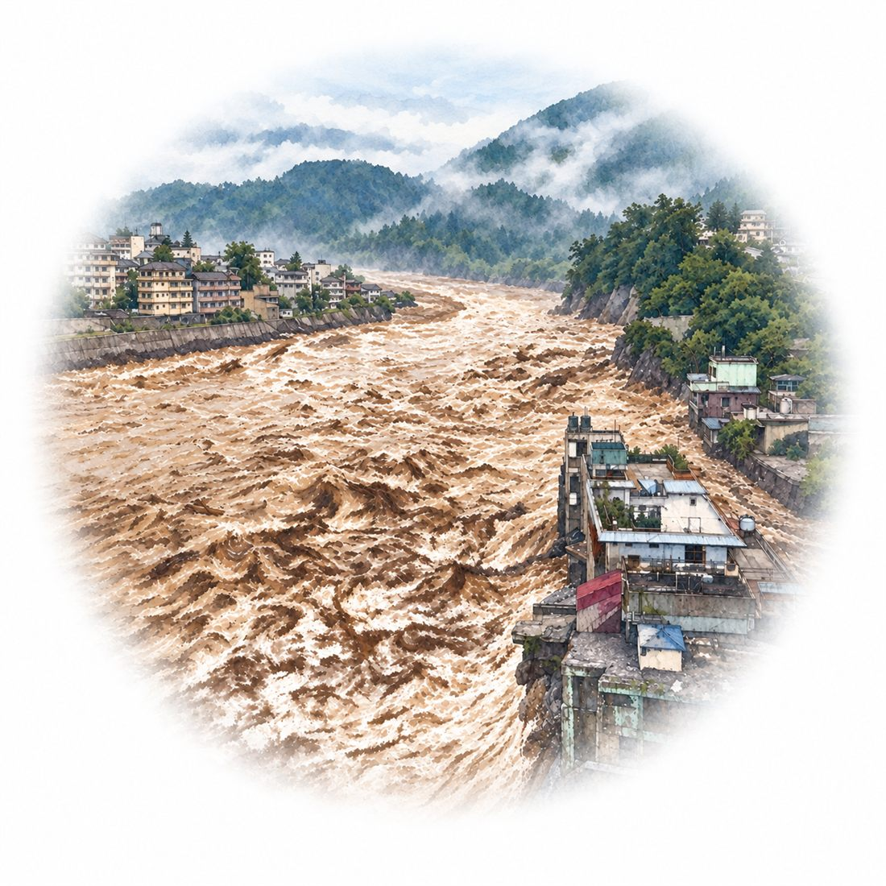

英語を通して覗いた日本の社会・海外の現実
アジアの自然災害と金融危機

アジアで起こる洪水や水不足などの自然災害は、人の命や建物だけでなく、経済にも大きな被害を与えます。農作物や道路が被害を受けると、食べ物や品物が不足して値段が上がり、生活が苦しくなります。また、学校や病院、道路を直すお金が足りないと、元の生活に戻るまでに時間がかかり、仕事にも長く影響が残ります。
こうした事態を防ぐには、災害が起きる前に、支援や修理に使うお金を用意しておくことが大切です。日本、中国、韓国、東南アジアの国々は、協力して保険などの仕組みを整えています。小さな災害には国が備えたお金を使い、大きな災害には借り入れや保険も使うなど、被害の大きさに応じた準備が必要です。
お金を早く届けられれば、人々の生活や企業の仕事を早く立て直せます。ある国の回復は、周りの国の経済を守ることにもつながります。自然災害を長く続く経済の危機にしないために、日ごろの備えと国同士の助け合いが欠かせません。